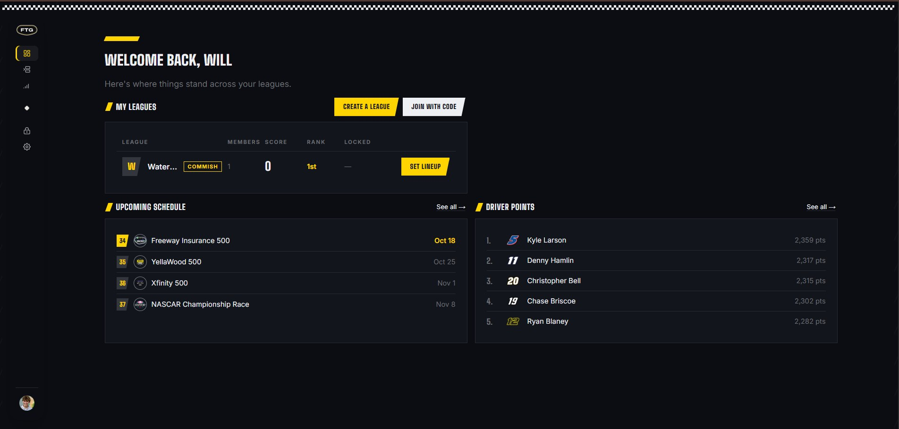

Run a full fantasy NASCAR season in one place: lineups that lock at race time, scoring that runs itself from race results, and standings everyone in the league can check from their phone.
Leagues come in two types. Pick’em leagues pick drivers each week in an order the commissioner sets — snake, rotating, or based on the standings. Tiered Lineup leagues build a lineup from three performance tiers of drivers, arranged with drag and drop.
Scoring rules are versioned, so a rule set is never edited in place once a season uses it. Each league has a hub for standings and stats and a commissioner view for settings, and an admin side handles the weekly race entries, qualifying, results and driver tiers. The site installs to a phone’s home screen like an app.

nascarapp.vercel.app